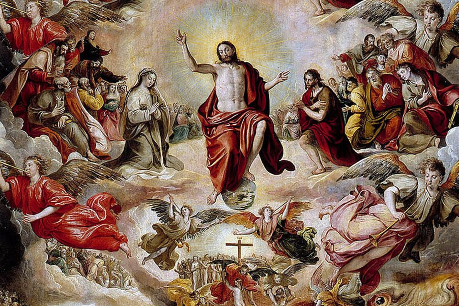
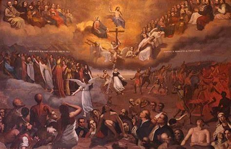
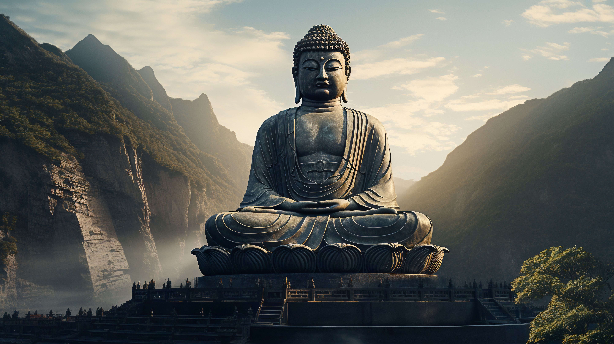
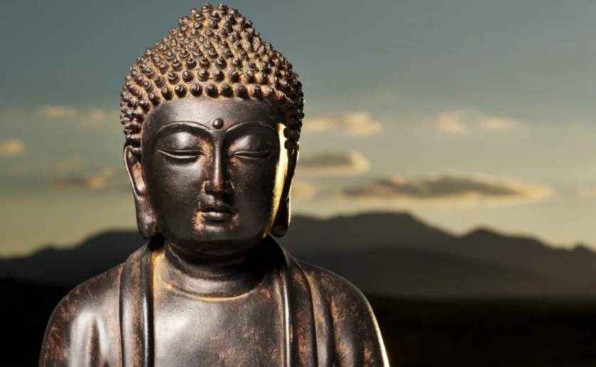
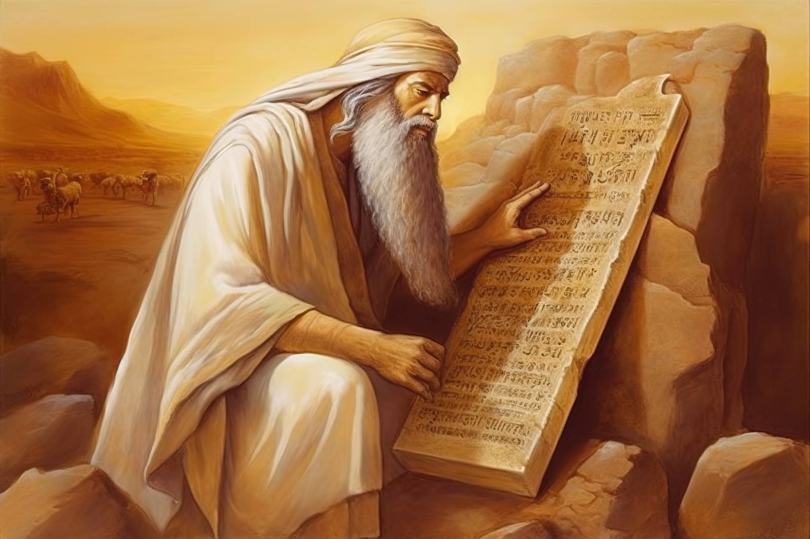
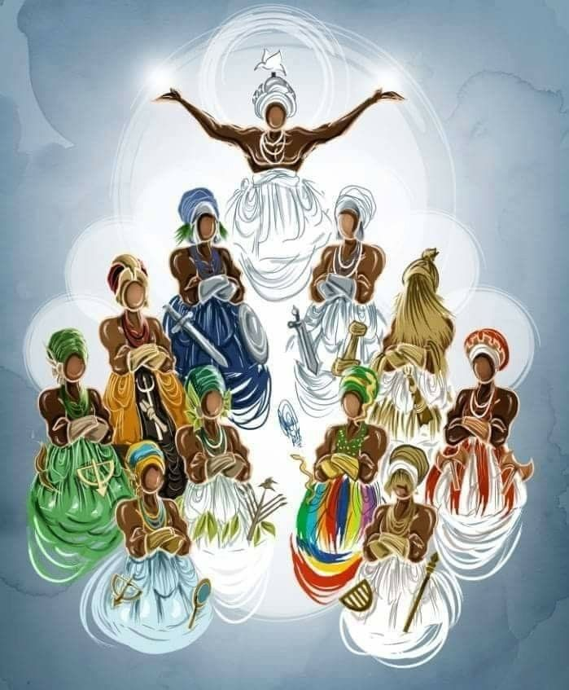
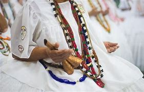
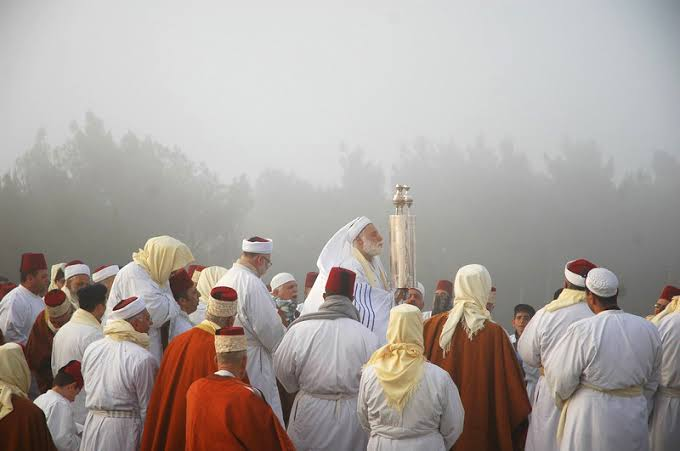
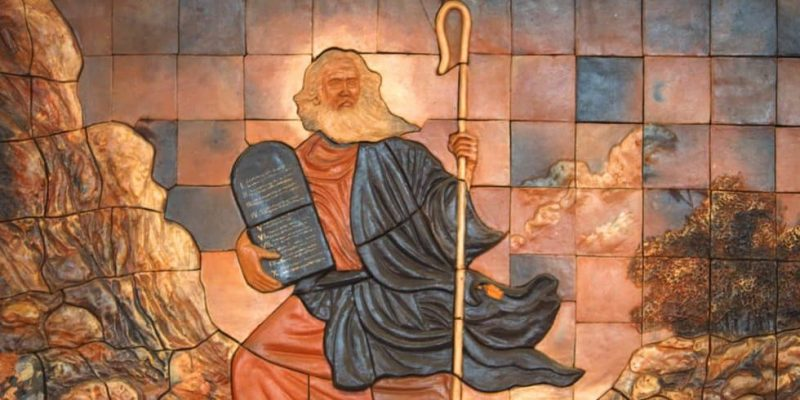
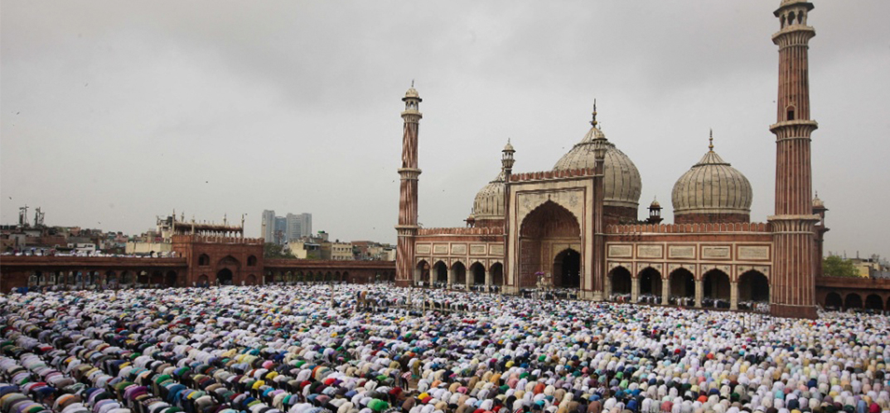

A morte é um fenômeno universal e inevitável, uma parte intrínseca da experiência humana. Ao longo da história, as sociedades e culturas têm desenvolvido várias maneiras de entender e lidar com a morte. As religiões desempenham um papel fundamental nesse processo, fornecendo estruturas de crenças e rituais que ajudam as pessoas a darem sentido à passagem da vida para a morte e à transição para o que pode ou não existir após a morte. Este texto explorará como diferentes religiões e tradições espirituais do mundo abordam o conceito de morte. Cada religião possui suas próprias crenças, rituais e práticas relacionadas à morte, que são moldadas por sua visão da divindade, da alma, da moralidade e da vida após a morte. Vamos examinar como o Cristianismo, o Budismo, o espiritualismo, o Candomblé, o Islamismo e o Judaísmo, compreendem a morte e como essas perspectivas influenciam o modo como seus seguidores vivenciam e enfrentam esse inevitável aspecto da existência humana.

A visão católica da morte é moldada por uma profunda crença na vida após a morte e na ressurreição, bem como por rituais e práticas que buscam proporcionar conforto espiritual aos fiéis e honrar aqueles que partiram. A crença central do Catolicismo em relação à morte é a promessa da vida após a morte. Os católicos acreditam que a alma é imortal e que, após a morte, ela enfrentará o julgamento divino. Dependendo de suas ações na vida terrena,
a alma pode ser destinada ao céu ou ao inferno. A ideia da ressurreição também é fundamental, com a crença de que no fim dos tempos, todos os mortos ressuscitarão para enfrentar o julgamento final. Os católicos acreditam na "Comunhão
dos Santos", o que significa que a comunidade de fiéis inclui não apenas os vivos, mas também os que já faleceram. Eles continuam a orar pelos falecidos e a pedir sua intercessão em suas próprias vidas. Acredita-se que as almas no purgatório podem ser ajudadas pelas orações dos vivos. A devoção aos santos desempenha um papel importante na vida católica, e muitos católicos buscam a intercessão de santos específicos para ajudá-los em várias situações, incluindo a morte. Além disso, as relíquias de santos são consideradas objetos sagrados que podem trazer bênçãos e conforto espiritual.


O Budismo é uma das principais religiões e filosofias espirituais do mundo, que aborda a morte e a transição para o pós-vida de maneira única. A morte é vista como uma parte natural do ciclo da vida, e aceitar a impermanência é essencial para encontrar a paz e a iluminação. Eles acreditam que, após a morte, a consciência continua a existir e entra em um novo corpo, em um processo chamado de renascimento. Este ciclo de renascimento é
governado pela lei do karma, que é a causa e efeito de nossas ações. Os budistas acreditam que cultivar um coração compassivo e amoroso não apenas ajuda na transição para o pós-vida, mas também é fundamental para uma vida significativa. As práticas funerárias budistas variam de acordo com a tradição e a cultura, mas geralmente incluem cerimônias de cremação ou enterro. Durante essas cerimônias, são realizados orações e rituais que visam proporcionar
conforto espiritual ao falecido e ajudá-lo em sua jornada pós-morte. Em algumas tradições do Budismo tibetano, acredita-se que a alma passe por um estágio intermediário chamado Bardo após a morte, onde ela enfrenta várias experiências antes de seu próximo renascimento. Sendo assim, o Budismo lida com a morte reconhecendo a impermanência da vida e buscando a libertação do ciclo de renascimento através da compaixão, da ética e da busca da iluminação.


O Espiritismo é uma doutrina ou religião que tem como princípio fundamental a crença na existência de espíritos e na comunicação entre os vivos e os mortos.O Espiritismo adota a crença na reencarnação, ou seja, a ideia de que os espíritos passam por múltiplas encarnações em corpos diferentes, a fim de aprender e evoluir espiritualmente. Cada vida é vista como uma oportunidade de crescimento e aprimoramento moral.
Os rituais e práticas relacionados à morte no Espiritismo podem incluir cerimônias de despedida, preces pelos espíritos recém-desencarnados e sessões mediúnicas para facilitar a comunicação com os entes queridos que partiram. Essa religião compartilha a ideia de que as ações de um indivíduo têm consequências, seguindo a lei de causa e efeito. Isso
significa que as ações de uma vida podem influenciar as experiências futuras, tanto nesta vida quanto em encarnações posteriores. Em relação à morte, o Espiritismo considera a passagem do espírito do mundo material para o mundo espiritual como uma parte natural da jornada da alma. A morte não é vista como o fim, mas como uma transição para uma nova fase de existência. Acredita-se que, após a morte, o espírito passa por um período de adaptação e revisão de sua vida terrena, onde pode enfrentar as consequências de suas ações.

No Candomblé, a morte é vista como uma transição da vida terrena para o mundo espiritual. Os seguidores acreditam que a alma do falecido continua a existir após a morte e que a comunicação com os ancestrais e os espíritos é possível. Os rituais funerários no Candomblé são complexos e variam de acordo com a tradição específica dentro dessa religião. Geralmente, envolvem cânticos, danças e oferendas para os orixás (divindades) e espíritos.
Os sacerdotes do Candomblé, conhecidos como "pai de santo" ou "mãe de santo", desempenham um papel central na realização desses rituais, que têm como objetivo garantir uma passagem tranquila da alma para o mundo espiritual. Algumas tradições do Candomblé acreditam na reencarnação, onde a alma do falecido pode retornar em um novo corpo humano. Essa crença varia entre as diferentes casas de Candomblé. O Candomblé lida com a morte como uma transição espiritual da vida terrena para o mundo espiritual. Os rituais

funerários desempenham um papel fundamental na garantia de uma passagem tranquila para a alma do falecido, e a comunicação contínua com os espíritos dos ancestrais é valorizada. A crença na continuidade da vida espiritual e a conexão com as divindades e os espíritos são aspectos centrais da abordagem do Candomblé à morte.

O Judaísmo tradicional não possui uma doutrina clara e unificada sobre a vida após a morte, e as crenças podem variar entre diferentes correntes judaicas. No entanto, muitos judeus acreditam em algum tipo de vida após a morte, onde a alma é avaliada com base em suas ações durante a vida e pode ser recompensada ou punida de acordo com essas ações. Algumas correntes do Judaísmo acreditam em um mundo vindouro, conhecido como
"Olam Haba", onde as almas podem experimentar a recompensa espiritual ou enfrentar a purificação antes de entrar em uma forma de comunhão com Deus. Isso é frequentemente associado com a ideia de um julgamento após a morte. O luto no Judaísmo é um processo estruturado que inclui vários estágios. Após o funeral, a família enlutada entra em um
período de luto chamado "shivah", que dura sete dias. Durante esse período, os enlutados recebem visitas de condolências, e são proibidos de realizar atividades festivas ou prazerosas. O luto continua por um período mais longo, com durações variáveis dependendo da relação com o falecido. É comum para os judeus visitarem os túmulos de entes queridos para fazer orações e lembrar dos mortos. Isso geralmente envolve a leitura do Salmo 23 e a recitação de orações para as almas dos falecidos.

De acordo com os pressupostos do Islamismo a morte é uma realidade que ninguém pode esquivar ou ficar a salvo dela, é uma transição entre mundos. O ser humano abandona o mundo da matéria e passa a viver uma outra vida. O Islamismo acredita que a existência humana continua após a morte na forma de ressurreição física e espiritual. Para os mulçumanos existe uma relação direta entre a comportamento do indivíduo na terra e a vida após a morte.
A vida após a morte será de recompensas e repreensões correspondentes à conduta terrena. Para eles, crer na vida após a morte os obriga a fazer o certo e ficar longe do pecado. Os mulçumanos creem que vivendo conforme os
ensinamentos divinos, não há motivos para temer a morte. Por isso, vivem tranquilos com a certeza da reencarnação. No Islamismo, a morte é apenas uma passagem para a vida eterna e acredita-se que depois da morte, o corpo perde o significado. No Juízo Final, todos serão julgados pelo que fizeram nesta vida. Quem fez o bem vai para o céu e quem fez o mal vai para o inferno. A morte é, portanto, a transição entre dois mundos porque o Islamismo acredita na ressurreição física e espiritual.

É o sistema de crenças e mitos dos povos Bantu, um dos maiores grupos etnolinguísticos da África. Espalha-se em subgrupos por praticamente toda a África Subsaariana. As diversas mitologias Bantu acreditam em um Deus supremo que vive próximo dos céus, separado dos homens, que vivem na terra. Não há um mito de criação, já que o universo e os animais são eternos. Há também a crença de que os espíritos dos mortos têm influência sobre os vivos, e que sua existência depende do quanto as pessoas se lembram deles.